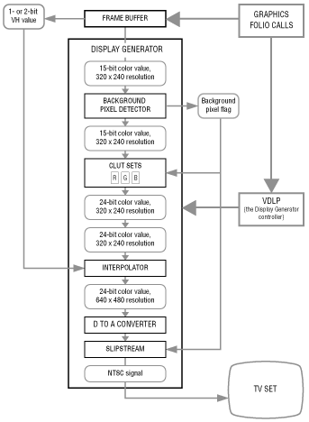

Perhaps the best way to look at the display generator components is to study them in the same order they're used to process a pixel moving from the frame buffer to the video display. The components are listed below:
Background pixel detector, which looks for background pixels and flags them.
CLUT sets, which expand 15-bit color values into 24-bit color values.
SlipStream (an optional feature), which replaces any background pixels with a pixel from an external video source when set to do so (only used in a cable environment).
Interpolator, which breaks up a pixel into four subpixels and, if pixel weighting is on, it colors the individual subpixels using a color gradient determined by cornerweights in surrounding pixels.
The frame buffer is at the input end of the display processor; it contains the pixels of the current frame. The display processor reads the frame buffer 30 times a second (the video frame rate) and puts out a 30-frame-per-second video signal fed to a television set. The entire process is presided over by a device driver, the video display list processor (VDLP). Figure 1 shows the display generator components and the data that flows through them.

Figure 1: Display generator components.
To understand the entire process, let's start with the frame buffer, move through the display generator component by component, and end with the video signal.